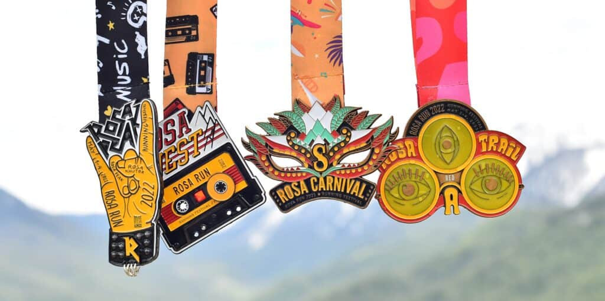
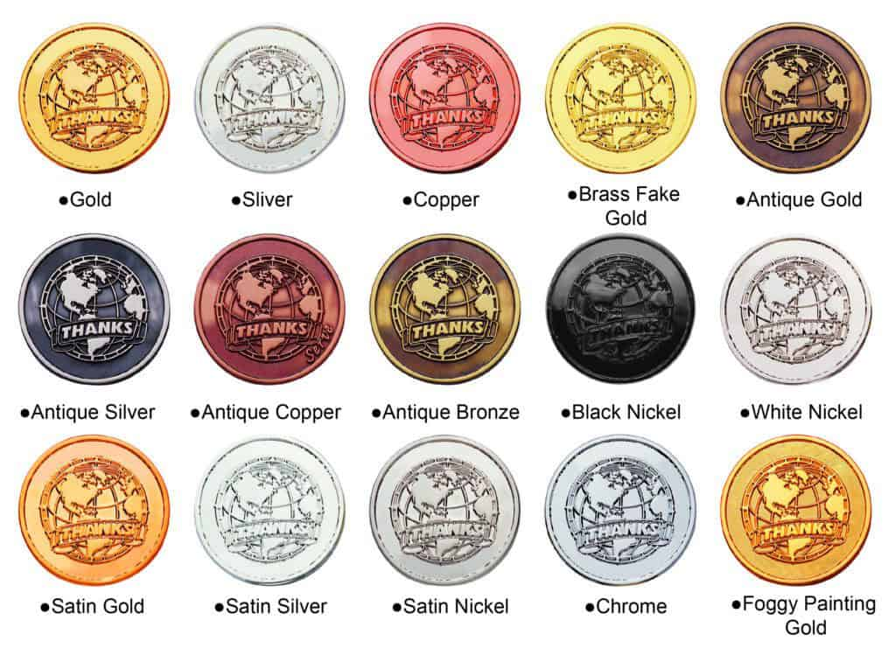
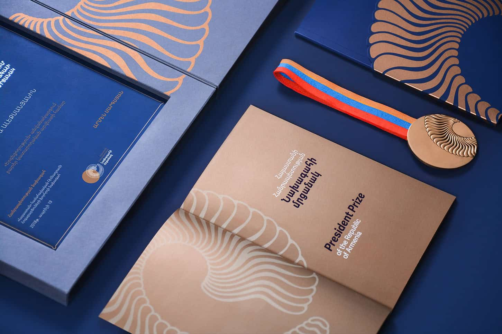

How to choose the right plating for your medal如何为奖牌选择合适的电镀工艺Cómo elegir el baño de tu medallaComment choisir le bon placage pour votre médailleSo wählen Sie die richtige Beschichtung für Ihre MedailleCome scegliere la placcatura giusta per la tua medagliaメダルに最適なメッキの選び方메달에 맞는 도금 선택 방법كيف تختار الطلاء المناسب لميداليتك
Gold, silver, nickel or antique finishes: what each plating does to colour, weight perception and cost.金、银、镍或仿古：不同电镀对颜色、质感与成本的影响。Oro, plata o antiguo: cómo afecta al color y al coste.Or, argent, nickel ou finitions antiques : l'effet de chaque placage sur la couleur, la perception du poids et le coût.Gold, Silber, Nickel oder Antik-Finish: was jede Beschichtung für Farbe, Gewichtsanmutung und Kosten bewirkt.Oro, argento, nichel o finiture antiche: l'effetto di ogni placcatura su colore, percezione del peso e costo.ゴールド、シルバー、ニッケル、アンティーク仕上げ：それぞれのメッキが色、重量感、コストに与える影響。골드, 실버, 니켈, 앤틱 마감: 각 도금이 색상, 무게감, 비용에 미치는 영향.تشطيبات ذهب أو فضة أو نيكل أو عتيقة: تأثير كل طلاء على اللون وإدراك الوزن والتكلفة.

Artwork guidelines that speed up sampling加快打样速度的设计稿规范Guía de arte para acelerar la muestraDirectives de fichier qui accélèrent l'échantillonnageDateirichtlinien, die die Bemusterung beschleunigenLinee guida per i file che accelerano la campionaturaサンプル作成を早める入稿ガイドライン샘플 제작을 앞당기는 파일 가이드라인إرشادات الملفات التي تسرّع أخذ العينات
Vector files, colour references and tolerances - how to prepare artwork that avoids a second sample round.矢量文件、色号与公差——如何准备稿件以避免二次打样。Vectores y tolerancias para evitar otra muestra.Fichiers vectoriels, références de couleur et tolérances : comment préparer un fichier qui évite un second échantillon.Vektordateien, Farbangaben und Toleranzen: wie Sie Grafiken vorbereiten, die eine zweite Musterung vermeiden.File vettoriali, riferimenti colore e tolleranze: come preparare grafiche che evitano un secondo giro di campioni.ベクターファイル、カラー指定、公差：再サンプルを避ける入稿データの作り方。벡터 파일, 색상 기준, 허용 오차: 두 번째 샘플을 피하는 작품 준비 방법.ملفات متجهة ومراجع ألوان وتفاوتات: كيف تجهّز ملفاً يتجنب جولة عينات ثانية.

Retail-ready packaging for souvenir medals面向零售的纪念奖牌包装Embalaje listo para retailEmballage prêt pour la vente au détail des médailles souvenirsVerkaufsfertige Verpackung für Souvenir-MedaillenImballaggio pronto per la vendita al dettaglio di medaglie souvenir販売対応の記念メダル用パッケージ소매 판매가 가능한 기념 메달 포장تغليف جاهز للبيع بالتجزئة للميداليات التذكارية
From polybag to presentation box: matching packaging to channel, budget and shipping method.从 OPP 袋到展示盒：按渠道、预算与运输方式匹配包装。De bolsa a estuche según canal y presupuesto.Du sachet plastique à la boîte cadeau : adapter l'emballage au canal, au budget et au mode d'expédition.Vom Polybeutel zur Präsentationsbox: Verpackung passend zu Kanal, Budget und Versandart.Dal sacchetto alla scatola regalo: adattare l'imballaggio a canale, budget e metodo di spedizione.ポリ袋から化粧箱まで：チャネル、予算、配送方法に合わせたパッケージ選び。폴리백부터 프레젠테이션 박스까지: 채널, 예산, 배송 방식에 맞춘 포장.من الكيس البلاستيكي إلى علبة العرض: مطابقة التغليف مع القناة والميزانية وطريقة الشحن.

Eco materials that still look premium依然高端的环保材质Materiales ecológicos que siguen viéndose premiumDes matériaux écologiques qui ont toujours l'air haut de gammeÖko-Materialien, die immer noch hochwertig aussehenMateriali ecologici che sembrano ancora premiumまだプレミアムに見えるエコ素材여전히 프리미엄으로 보이는 친환경 소재مواد صديقة للبيئة لا تزال تبدو متميزة
RPET, bamboo and recycled metal - what works for green campaigns without losing finish quality.RPET、竹材与回收金属——在不损失表面质量的前提下实现绿色营销。RPET, bambú y metal reciclado: qué funciona para campañas ecológicas sin perder calidad de acabado.RPET, bambou et métal recyclé - ce qui fonctionne pour les campagnes vertes sans perdre la qualité de la finition.RPET, Bambus und recyceltes Metall - was für grüne Kampagnen funktioniert, ohne die Endqualität zu verlieren.RPET, bambù e metallo riciclato: cosa funziona per le campagne verdi senza perdere la qualità della finitura.RPET、竹、リサイクル金属-仕上げ品質を損なうことなくグリーンキャンペーンに適しています。RPET, 대나무 및 재활용 금속 - 마감 품질을 잃지 않고 친환경 캠페인에 효과적입니다.RPET والخيزران والمعادن المعاد تدويرها - ما يصلح للحملات الخضراء دون فقدان جودة التشطيب.

Designing a challenge coin people keep设计让人珍藏的挑战币Diseñar una moneda de desafío que la gente conserveConcevoir une pièce défi que les gens gardentGestaltung einer Challenge Coin, die die Leute behaltenProgettare una moneta sfida che le persone conservano人々が維持するチャレンジコインのデザイン사람들이 보관하는 챌린지 코인 디자인تصميم عملة التحدي التي يحتفظ بها الناس
Weight, edge work and 3D relief: the details that turn a coin into a keepsake.克重、边齿与 3D 浮雕：让一枚币成为纪念品的细节。Peso, trabajo de bordes y relieve 3D: los detalles que convierten una moneda en recuerdo.Poids, travail des bords et relief 3D : les détails qui transforment une pièce en souvenir.Gewicht, Randarbeit und 3D-Relief: Die Details, die aus einer Münze ein Andenken machen.Peso, bordatura e rilievo 3D: i dettagli che trasformano una moneta in un ricordo.重量、エッジワーク、3 Dレリーフ：コインを記念品に変えるディテール。무게, 가장자리 작업 및 3D 릴리프: 동전을 기념품으로 만드는 세부 사항.الوزن وعمل الحواف والتخفيف ثلاثي الأبعاد: التفاصيل التي تحول العملة إلى تذكار.

Planning giveaways for a product launch为新品发布策划赠品Planificar obsequios para el lanzamiento de un productoPlanification de cadeaux pour le lancement d'un produitPlanung von Werbegeschenken für eine ProdukteinführungPianificazione di omaggi per il lancio di un prodotto製品リリースのプレゼントを計画する제품 출시를 위한 사은품 계획하기هدايا التخطيط لإطلاق المنتج
Timelines, quantity buffers and the packaging choice that keeps shipping costs under control.时间节点、数量余量与包装选择，让运费可控。Plazos, márgenes de cantidad y la elección de embalaje que mantienen los costos de envío bajo control.Les délais, les tampons de quantité et le choix de l'emballage qui permet de contrôler les coûts d'expédition.Zeitpläne, Mengenpuffer und die Verpackungswahl, die die Versandkosten unter Kontrolle hält.Tempistiche, buffer quantitativi e la scelta del packaging che tiene sotto controllo i costi di spedizione.タイムライン、数量バッファ、および輸送コストを管理する梱包の選択肢。배송비를 통제할 수 있는 타임라인, 수량 완충제 및 포장 선택.الجداول الزمنية والمخازن المؤقتة للكميات واختيار التغليف الذي يبقي تكاليف الشحن تحت السيطرة.